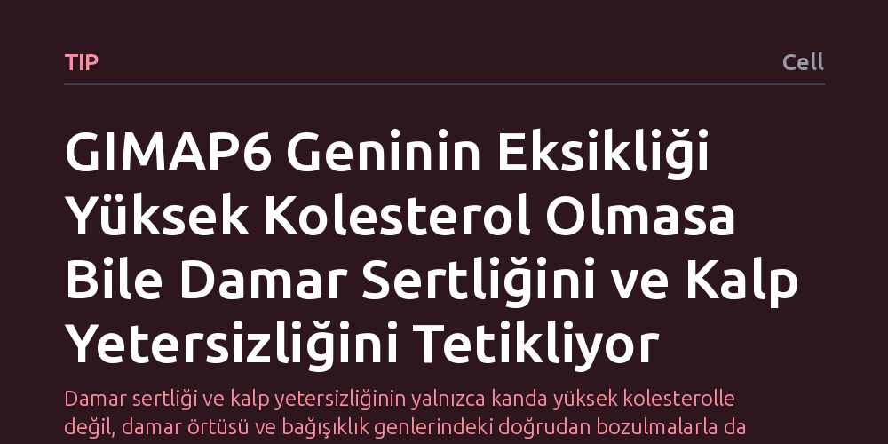

TIP · Cell · 2026-10-14
Araştırmacılar, bağışıklık düzenleyici GIMAP6 geninin damar sağlığı ve kalp yetersizliğindeki rolünü inceledi. Genin eksikliğinin, kanda yüksek kolesterol bulunmasa dahi damar iç örtüsünü bozarak ve iltihabı artırarak damar sertliği ile ölümcül kalp yetersizliğini tetiklediği saptandı.
Damar sertliği ve kalp yetersizliğinin yalnızca kanda yüksek kolesterolle değil, damar örtüsü ve bağışıklık genlerindeki doğrudan bozulmalarla da tetiklenebileceğini gösterir.

Geleneksel tıp anlayışında damar sertliği ve buna bağlı kalp krizleri, neredeyse tamamen kanda dolaşan aşırı yağ ve kolesterol birikimiyle ilişkilendirilir. Beslenme, genetik veya hareketsiz yaşam sonucu kandaki zararlı yağ oranlarının yükselmesi, damar duvarlarında plak oluşumunun temel tetikleyicisi kabul edilir. Ancak klinik uygulamada, kan kolesterol değerleri tamamen normal sınırlarda seyrettiği halde ağır damar tıkanıklığı yaşayan ve kalp yetersizliğine yakalanan çok sayıda hasta bulunmaktadır. Bu durum, damar sağlığını koruyan biyolojik mekanizmaların yalnızca kandaki yağ seviyelerinden ibaret olmadığını düşündürmektedir.
Araştırmacıların odaklandığı temel soru, bağışıklık sistemini düzenleyen genetik mekanizmaların damar çeperini korumada doğrudan bir kalkan görevi görüp görmediğidir. Özellikle bağışıklık düzenleyici GIMAP6 geninin varlığının, klasik risk faktörü olan kolesterol yüksekliği bulunmasa dahi damar yapısının korunmasında kritik bir rol oynayıp oynamadığı merak konusudur. Bu mekanizmanın çözülmesi, damar tıkanıklığının ve buna bağlı kalp rahatsızlıklarının altında yatan temel hücresel dinamikleri anlamak açısından büyük önem taşımaktadır.
Bilim insanları bu biyolojik bağlantıyı ortaya çıkarmak amacıyla, GIMAP6 geninin devre dışı bırakıldığı deneysel modeller ve damar hücre kültürleri üzerinde kapsamlı laboratuvar deneyleri yürüttü. Kan damarlarının iç yüzeyini kesintisiz bir bariyer gibi örten endotel hücrelerinin yapısal bütünlüğü ve bağışıklık yanıtında ön saflarda yer alan makrofaj hücrelerinin davranışları kontrollü biçimde izlendi.
Çalışmada hem normal kan yağı düzeyine sahip biyolojik koşullar hem de yüksek kolesterol ortamı oluşturularak süreç karşılaştırmalı olarak analiz edildi. Böylece GIMAP6 geninin eksikliğinin tek başına damar sağlığını nasıl etkilediği ile bu duruma ek bir risk faktörü olarak hiperlipidemi eklendiğinde sürecin nasıl bir seyir izlediği adım adım ölçüldü.
Elde edilen bulgular, GIMAP6 geninin eksikliğinin damar duvarında birbiriyle bağlantılı iki temel hasar mekanizmasını harekete geçirdiğini gösterdi. İlk olarak, damarın en iç koruyucu tabakasını oluşturan endotel örtüsünün dengesi ve kararlılığı bozulmakta, bu da damar geçirgenliğinin kontrolsüz artmasına yol açmaktadır. İkinci olarak, bağışıklık sisteminin temizleyici hücreleri olan makrofajlar anormal biçimde yağ yüklenmeye başlamakta ve bölgede yoğun bir iltihaplanma sürecini tetiklemektedir.
Çalışmanın en dikkat çekici tespiti, bu yıkıcı sürecin kanda yüksek kolesterol bulunmasa dahi kendi başına damar sertliğini ve iskemik kalp yetersizliğini başlatabilmesidir. Bununla birlikte deneyler, ortama yüksek kolesterol eklendiğinde hastalığın ilerleyişinin çok daha hızlı ve şiddetli hale geldiğini, yani iki risk faktörünün birbirini katlayarak ölümcül sonuçlar doğurduğunu net biçimde ortaya koydu.
Bu sonuçlar, damar tıkanıklığı ile mücadelede yalnızca kanda dolaşan yağları düşürmeye odaklanan mevcut yaklaşımların neden bazı hastalarda yetersiz kaldığına mantıklı bir açıklama getirmektedir. Damar iç çeperinin hücresel kararlılığı ve bağışıklık dengesi, en az kandaki kolesterol seviyesi kadar belirleyici bir savunma hattı oluşturmaktadır. Damar dokusunun kendi iç dinamiklerindeki bu tür genetik ve immünolojik aksaklıklar, tek başına bile hayati risk yaratabilmektedir.
GIMAP6 geninin sağladığı koruyucu etkinin anlaşılması, gelecekte kolesterolü normal olduğu halde kalp damar hastalığı riski taşıyan bireyler için doğrudan damar duvarını ve yerel bağışıklığı hedef alan yeni tedavi yöntemlerinin tasarlanmasına zemin hazırlayabilir. Ancak araştırmanın deneysel aşamada olduğu ve bu mekanizmanın insan klinik uygulamalarında hedeflenebilmesi için geniş çaplı klinik çalışmalarla doğrulanması gerektiği unutulmamalıdır.